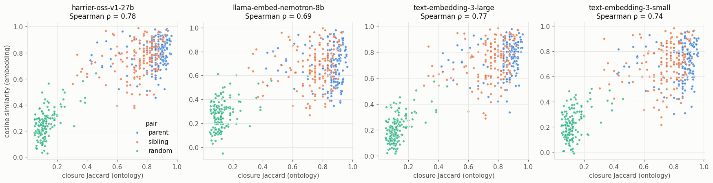
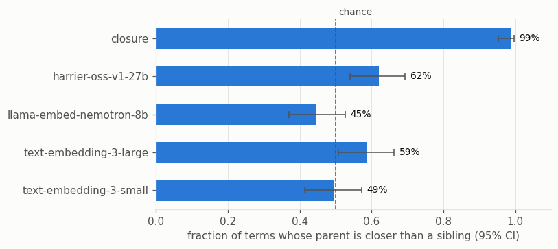

Subsumption Recapitulation: Do LLM Embeddings Encode the Ontology Hierarchy?
LLM embeddings of ontology terms are built only from text (labels, and possibly definitions). Ontologies encode subsumption: finger syndactyly is a kind of syndactyly. This notebook asks how much of that hierarchy can be recovered from embedding space.
We compare the four embedding models hosted by OLS with the ontology itself, written as closure vectors (each term is a multi-hot vector of its ancestors). All comparisons use the same EmbeddingProviderInterface code, so the only thing that changes between rows is the source of the vectors.
Design. From the HPO phenotypic abnormality branch we sample:
parent pairs: a term and one of its direct
is_aparentssibling pairs: the same term and another child of that parent (not subsuming or subsumed); these are the hard negatives, because they are as close in the graph as a parent is
random pairs: two terms drawn at random from the branch
We then ask two questions:
Does embedding similarity track ontology similarity (closure Jaccard)?
For each term, is its parent closer than a sibling? Cosine is symmetric, so this is the most that a single similarity score can say about subsumption; it cannot tell which term is the parent.
[1]:
import warnings
warnings.filterwarnings("ignore", category=UserWarning, module="eutils")
warnings.filterwarnings("ignore", category=DeprecationWarning)
import matplotlib.pyplot as plt
import seaborn as sns
# reference palette (categorical slots in fixed order; sequential blue ramp)
BLUE, ORANGE, AQUA = "#2a78d6", "#eb6834", "#1baf7a"
INK, INK2, GRID, SURFACE = "#0b0b0b", "#52514e", "#e4e3df", "#fcfcfb"
plt.rcParams.update({
"figure.facecolor": SURFACE, "axes.facecolor": SURFACE, "savefig.facecolor": SURFACE,
"axes.edgecolor": GRID, "axes.labelcolor": INK2, "axes.titlecolor": INK,
"axes.grid": True, "grid.color": GRID, "grid.linewidth": 0.6,
"axes.spines.top": False, "axes.spines.right": False,
"xtick.color": INK2, "ytick.color": INK2, "text.color": INK,
"font.size": 10, "axes.titlesize": 11, "figure.dpi": 110,
})
SEQUENTIAL = sns.blend_palette(["#f0efec", "#86b6ef", "#2a78d6", "#0d366b"], as_cmap=True)
[2]:
import random
from collections import defaultdict
import numpy as np
import pandas as pd
from scipy.stats import spearmanr
from oaklib import get_adapter
from oaklib.datamodels.vocabulary import IS_A
hp = get_adapter("sqlite:obo:hp")
ols = get_adapter("ols:hp")
MODELS = ols.embedding_models()
PHENOTYPIC_ABNORMALITY = "HP:0000118"
Sampling term pairs
[3]:
random.seed(42)
terms = sorted(t for t in hp.descendants(PHENOTYPIC_ABNORMALITY, predicates=[IS_A], reflexive=False) if t.startswith("HP:"))
ancestors = {}
def anc(t):
if t not in ancestors:
ancestors[t] = set(hp.ancestors(t, predicates=[IS_A], reflexive=True)) - {"owl:Thing"}
return ancestors[t]
parents, children = {}, defaultdict(list)
for s, _, o in hp.relationships(predicates=[IS_A]):
if s.startswith("HP:") and o.startswith("HP:"):
parents.setdefault(s, []).append(o)
children[o].append(s)
candidates = [t for t in terms if t in parents]
random.shuffle(candidates)
triples = []
for c in candidates:
p = random.choice(parents[c])
if p in (PHENOTYPIC_ABNORMALITY, "HP:0000001"):
continue
siblings = [s for s in children[p] if s != c and s not in anc(c) and c not in anc(s)]
if not siblings:
continue
triples.append((c, p, random.choice(siblings)))
if len(triples) >= 150:
break
random_pairs = [(random.choice(terms), random.choice(terms)) for _ in range(150)]
pairs = pd.DataFrame(
[(c, p, "parent") for c, p, _ in triples]
+ [(c, s, "sibling") for c, _, s in triples]
+ [(a, b, "random") for a, b in random_pairs],
columns=["subject", "object", "kind"],
)
all_terms = sorted(set(pairs.subject) | set(pairs.object))
print(f"{len(terms)} terms in branch; {len(triples)} (term, parent, sibling) triples; {len(all_terms)} distinct terms")
pairs.groupby("kind").size()
19177 terms in branch; 150 (term, parent, sibling) triples; 729 distinct terms
[3]:
kind
parent 150
random 150
sibling 150
dtype: int64
Vectors for every model
One matrix per model. OLS vectors are cached locally after the first run.
[4]:
def pair_cosines(adapter, model, metric="cosine"):
ids, m = adapter.entity_embeddings(all_terms, model=model)
ix = {c: i for i, c in enumerate(ids)}
if metric == "cosine":
m = m / np.linalg.norm(m, axis=1, keepdims=True)
out = []
for s, o in zip(pairs.subject, pairs.object):
if s not in ix or o not in ix:
out.append(np.nan)
continue
a, b = m[ix[s]], m[ix[o]]
if metric == "cosine":
out.append(float(a @ b))
else:
a, b = a > 0, b > 0
out.append((a & b).sum() / (a | b).sum())
return out
pairs["closure_jaccard"] = pair_cosines(hp, "closure", metric="jaccard")
pairs["closure"] = pair_cosines(hp, "closure")
for model in MODELS:
pairs[model] = pair_cosines(ols, model)
SOURCES = ["closure"] + MODELS
pairs.head()
[4]:
| subject | object | kind | closure_jaccard | closure | harrier-oss-v1-27b_pca512 | llama-embed-nemotron-8b_pca512 | text-embedding-3-large_pca512 | text-embedding-3-small_pca512 | |
|---|---|---|---|---|---|---|---|---|---|
| 0 | HP:0012712 | HP:0000365 | parent | 0.857143 | 0.925820 | 0.826311 | 0.739575 | 0.838928 | 0.819596 |
| 1 | HP:0100623 | HP:0000036 | parent | 0.900000 | 0.948683 | 0.864599 | 0.876593 | 0.779589 | 0.792845 |
| 2 | HP:0002343 | HP:0000238 | parent | 0.900000 | 0.948683 | 0.831912 | 0.721223 | 0.837716 | 0.790062 |
| 3 | HP:6000651 | HP:0010660 | parent | 0.684211 | 0.827170 | 0.930526 | 0.855038 | 0.900561 | 0.873528 |
| 4 | HP:0033265 | HP:0031265 | parent | 0.923077 | 0.960769 | 0.717179 | 0.471363 | 0.636514 | 0.522678 |
1. Does embedding similarity track ontology similarity?
Each point is a pair of terms. The x-axis is the Jaccard similarity of the two terms’ ancestor sets (classic semantic similarity), and the y-axis is cosine similarity in each model’s embedding space.
[5]:
KIND_COLORS = {"parent": BLUE, "sibling": ORANGE, "random": AQUA}
fig, axes = plt.subplots(1, len(MODELS), figsize=(16, 4.2), sharex=True)
for ax, model in zip(axes, MODELS):
for kind, color in KIND_COLORS.items():
d = pairs[pairs.kind == kind]
ax.scatter(d.closure_jaccard, d[model], s=14, color=color, alpha=0.75,
edgecolors=SURFACE, linewidths=0.5, label=kind)
rho = spearmanr(pairs.closure_jaccard, pairs[model], nan_policy="omit").statistic
ax.set_title(f"{model.replace('_pca512', '')}\nSpearman ρ = {rho:.2f}")
ax.set_xlabel("closure Jaccard (ontology)")
axes[0].set_ylabel("cosine similarity (embedding)")
axes[0].legend(title="pair", frameon=False, loc="lower right")
fig.tight_layout()

[6]:
corr = pd.DataFrame({
"Spearman ρ, all pairs": [spearmanr(pairs.closure_jaccard, pairs[m], nan_policy="omit").statistic for m in SOURCES],
"Spearman ρ, parent + sibling only": [
spearmanr(*pairs.loc[pairs.kind != "random", ["closure_jaccard", m]].T.values, nan_policy="omit").statistic
for m in SOURCES
],
}, index=SOURCES)
corr.round(3)
[6]:
| Spearman ρ, all pairs | Spearman ρ, parent + sibling only | |
|---|---|---|
| closure | 0.999 | 0.999 |
| harrier-oss-v1-27b_pca512 | 0.775 | 0.313 |
| llama-embed-nemotron-8b_pca512 | 0.687 | 0.108 |
| text-embedding-3-large_pca512 | 0.768 | 0.297 |
| text-embedding-3-small_pca512 | 0.739 | 0.230 |
All four LLM models correlate well with ontology similarity when random pairs are included (ρ ≈ 0.7 to 0.8), because unrelated terms are easy to separate. Among closely related terms (parents and siblings only) the correlation falls to ρ ≈ 0.1 to 0.3: in text space, the fine structure of the hierarchy is largely invisible. In the scatter plots, parent pairs (blue) and sibling pairs (orange) overlap almost completely on the y-axis, even though the ontology separates them on the x-axis. (The
closure row is a sanity check: cosine and Jaccard over the same binary vectors are nearly monotonic.)
2. Is a term’s parent closer than its sibling?
For each sampled term, we check whether cosine(term, parent) > cosine(term, sibling). Chance is 50%.
[7]:
par = pairs[pairs.kind == "parent"].reset_index(drop=True)
sib = pairs[pairs.kind == "sibling"].reset_index(drop=True)
def wilson(k, n, z=1.96):
# 95% Wilson score interval for a proportion
p = k / n
centre = (p + z**2 / (2 * n)) / (1 + z**2 / n)
half = z * np.sqrt(p * (1 - p) / n + z**2 / (4 * n**2)) / (1 + z**2 / n)
return centre - half, centre + half
rows = []
for m in SOURCES:
k, n = int((par[m] > sib[m]).sum()), len(par)
lo, hi = wilson(k, n)
rows.append({"source": m, "parent closer than sibling": k / n, "95% CI low": lo, "95% CI high": hi})
wins = pd.DataFrame(rows).set_index("source")
fig, ax = plt.subplots(figsize=(7.5, 3.4))
names = [m.replace("_pca512", "") for m in SOURCES]
v = wins["parent closer than sibling"].values
err = [v - wins["95% CI low"].values, wins["95% CI high"].values - v]
ax.set_axisbelow(True)
ax.barh(names, v, color=BLUE, height=0.55, xerr=err, error_kw={"ecolor": INK2, "elinewidth": 1, "capsize": 3})
ax.axvline(0.5, color=INK2, linewidth=1, linestyle="--")
ax.annotate("chance", (0.5, 1.0), xycoords=("data", "axes fraction"), xytext=(3, 2),
textcoords="offset points", color=INK2, fontsize=9, va="bottom")
for y, (val, hi) in enumerate(zip(v, wins["95% CI high"].values)):
ax.text(hi + 0.015, y, f"{val:.0%}", va="center", color=INK, fontsize=9)
ax.set_xlim(0, 1.1)
ax.set_xlabel("fraction of terms whose parent is closer than a sibling (95% CI)")
ax.invert_yaxis()
ax.grid(axis="y", visible=False)
fig.tight_layout()
wins.round(3)
[7]:
| parent closer than sibling | 95% CI low | 95% CI high | |
|---|---|---|---|
| source | |||
| closure | 0.987 | 0.953 | 0.996 |
| harrier-oss-v1-27b_pca512 | 0.620 | 0.540 | 0.694 |
| llama-embed-nemotron-8b_pca512 | 0.447 | 0.369 | 0.527 |
| text-embedding-3-large_pca512 | 0.587 | 0.507 | 0.662 |
| text-embedding-3-small_pca512 | 0.493 | 0.414 | 0.573 |

Where the models get it wrong
The cases where a model places a sibling closer than the parent show the kinds of structure that text similarity misses: siblings that share most of their wording, and parents with generic labels.
[8]:
model = "text-embedding-3-large_pca512"
miss = par[par[model] <= sib[model]].copy()
miss["sibling"] = sib.loc[miss.index, "object"]
miss["cos(term, parent)"] = miss[model]
miss["cos(term, sibling)"] = sib.loc[miss.index, model]
lbl = dict(hp.labels(set(miss.subject) | set(miss.object) | set(miss.sibling)))
miss = miss.assign(term=miss.subject.map(lbl), parent=miss.object.map(lbl), sibling=miss.sibling.map(lbl))
miss[["term", "parent", "sibling", "cos(term, parent)", "cos(term, sibling)"]].head(10).round(3)
[8]:
| term | parent | sibling | cos(term, parent) | cos(term, sibling) | |
|---|---|---|---|---|---|
| 4 | Podocyte myelin figures | Abnormal glomerular visceral epithelial cell m... | Podocyte foot process effacement | 0.637 | 0.687 |
| 6 | Jumping | Stereotypic whole-body movements | Stereotypical body rocking | 0.455 | 0.490 |
| 8 | Excessive purine production | Abnormal homeostasis | Abnormal glucose homeostasis | 0.421 | 0.443 |
| 10 | Upper eyelid erythema | Eyelid erythema | Lower eyelid erythema | 0.916 | 0.933 |
| 14 | Increased circulating interleukin 8 concentration | Abnormal circulating interleukin concentration | Increased circulating interleukin 13 concentra... | 0.713 | 0.725 |
| 17 | Decreased circulating alkaline phosphatase act... | Abnormality of alkaline phosphatase level | Elevated circulating alkaline phosphatase conc... | 0.862 | 0.866 |
| 18 | Best corrected visual acuity 0.9 LogMAR | Abnormal best corrected visual acuity test | Best corrected visual acuity 3.0 LogMAR | 0.753 | 0.932 |
| 20 | Intrathoracic hemangioma | Hemangioma | Visceral hemangioma | 0.753 | 0.797 |
| 23 | Philtrum with midline raphe | Abnormality of the philtrum | Short philtrum | 0.616 | 0.725 |
| 24 | Triceps areflexia | Areflexia of upper limbs | Biceps areflexia | 0.803 | 0.908 |
Summary
Coarse structure: yes. All four OLS-hosted LLM embedding models separate related from unrelated HPO terms well.
Fine structure: barely. Given a term, its direct parent is not reliably closer than a sibling. The best models (harrier, text-embedding-3-large) are only modestly above chance, and nemotron and text-embedding-3-small are at chance. The ontology closure gets this right 99% of the time (the misses involve terms with several parents).
Direction: no. Cosine similarity is symmetric, so embeddings alone cannot say which of two terms subsumes the other. That needs the ontology, or an asymmetric scoring method such as a trained entailment classifier.
In practice, LLM embeddings are useful for finding the right neighbourhood (search, grounding, candidate mappings), but they should not stand in for the hierarchy when exact subsumption matters.
Caveats. 150 triples per condition gives 95% intervals of about ±8 percentage points, so differences between the LLM models are indicative only. OLS embeds a fixed text per class (see #918), and embedding labels plus definitions may behave differently; the llm: adapter can test that. Increase the sample size in the sampling cell to tighten the estimates. Vectors are cached, so only new terms are fetched from OLS.